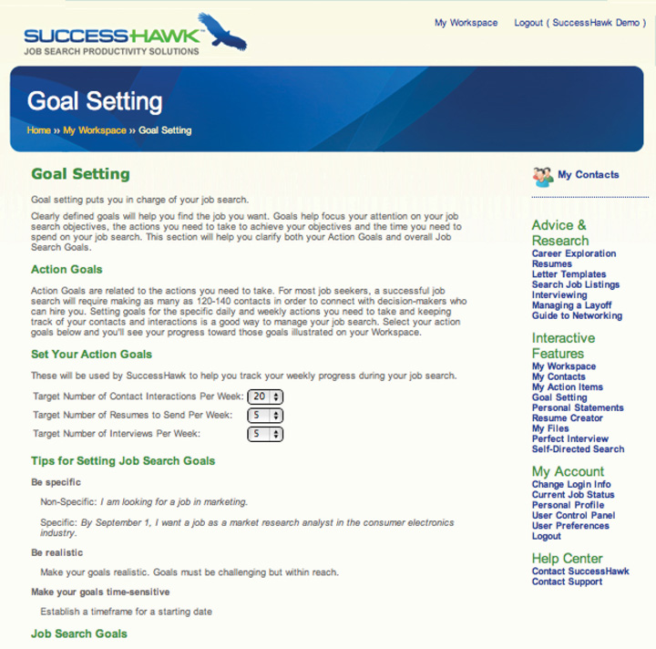

3.5 Chapter Review and Exercises
Identifying your job search targets is step 1 of the six-step job search process because it informs all of the following steps:
- A specific target enables you to create marketing (step 2) that is appropriate to your prospective employers.
- In the research step, we will focus on finding the trends, challenges, and other nuances of your job targets. We also will focus on finding the structure and actual people of organizations that are active in your industry, function, and geography. By specifying your targets, you will know what to research in depth (step 3) and how to find this very specific information.
- You can define your networking and interviewing (step 4) around contacts relevant to your target.
- When you organize and troubleshoot your search (step 5), you can pace your search with what you know of a typical search in that target, and you can troubleshoot your results with what is expected for your target.
- When you negotiate your offer (step 6), you can build on the compensation structure and amounts that are customary for your target.
By looking at how to define your job target the way an employer defines jobs (the three elements of industry, function, and geography), you are grounding your search efforts in a practical, actionable way. Yet, we also reviewed other criteria that are meaningful to your job decisions personally (the decision criteria broadly categorized as employer characteristics, compensation and advancement, and lifestyle and environment). This way, you focus efforts not just on what the market wants but also on what you want.
Chapter Takeaways
- You cannot consider every job available, so you need a structure through which to filter the possibilities and narrow your job search targets.
- Three elements of a well-defined job search target are industry, function, and geography.
- Each element can be further specified and may need to be, depending on how broad it is.
- You need to translate the three-element structure to your interests.
- Geography targets can be as narrow as a specific neighborhood or as broad as multiple countries. You want to look not just at the job market but also at the living conditions when selecting your geography targets.
- Industry targets can be uncovered by looking at industry lists, general news and business magazines, and your own interests. Look at all the different products and services of a particular industry to identify possible subcategories.
- Function targets can be uncovered by looking at problems to solve or needs to fill.
- Industry, function, and geography are not enough when selecting your next job.
- You also want to look at employer characteristics, compensation and advancement, and lifestyle and environment.
- Not all criteria will or should matter to you. You decide what matters and how much you prioritize the criteria or are willing to make trade-offs.
- Yes, targets need to be specific as you define each one, but you do not need to have only one overall target.
- There are significant advantages to having multiple targets, including increasing the size of your overall job market, increasing your flexibility to react to slowdowns in any one job market, and increasing your options should one target prove elusive.
- It is best to change just one element of the industry-function-geography model to prevent search efforts from getting too confusing and diluted.
- Expanding geography targets is more difficult than expanding industry or function because of the financial and time requirements for travel.
Chapter Review
- What are the three elements of a well-defined job search target?
- Why is using the three elements to filter important to your job search?
- Why are the three elements not enough to make decisions about your next job?
- What are other criteria you need to consider as you search for a job that is right for you?
- What does it mean to have multiple targets?
- Why are multiple targets helpful?
- How might you expand your targets without diluting your search efforts too much?
SuccessHawk: All about You
Log in to SuccessHawk and go to the right-hand menu bar. Under “My Account,” click on “Personal Profile.” Spend some time thinking about the information you are asked to provide here. This will help you determine what kinds of jobs and careers you should pursue.
SuccessHawk: Goal Setting
Clearly defined goals help focus your attention on your job search objectives, the actions you need to take to achieve your objectives, and the time you need to spend on your job search. To access the goal-setting tool, go to the right-hand menu bar and click on “Goal Setting” in the “Interactive Features” section.
